Fotografier
Bilder återställda från den tidigare webbplatsen. Bildtexter visas när de gick att koppla till respektive bild i originalmaterialet.
Visar 540 av 540 bilder
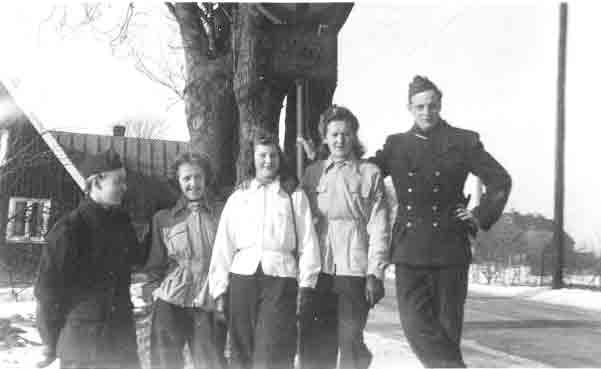
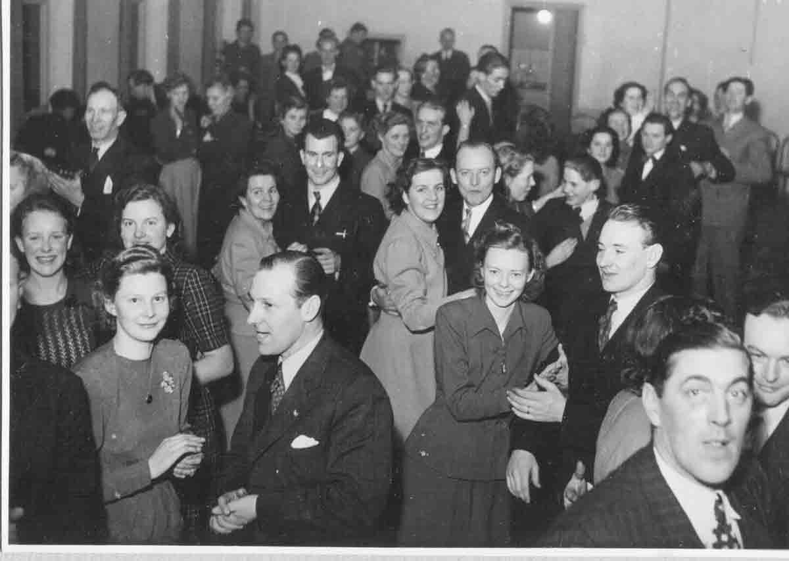
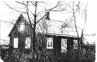
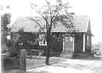
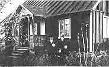
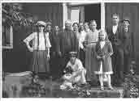
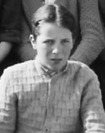
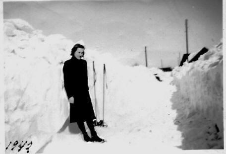
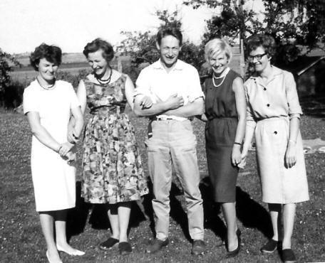
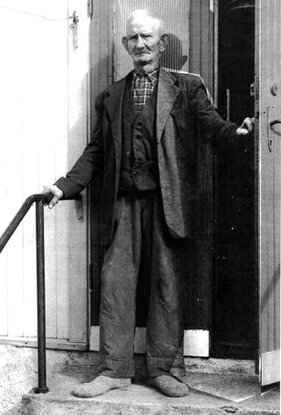

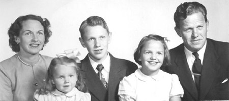
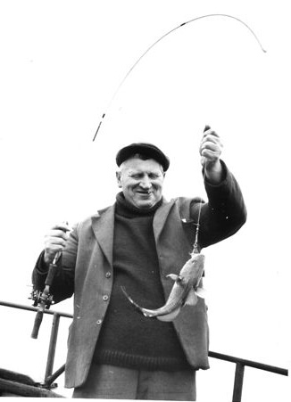
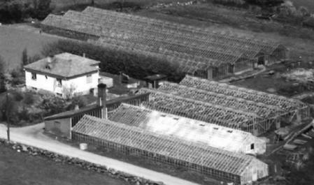

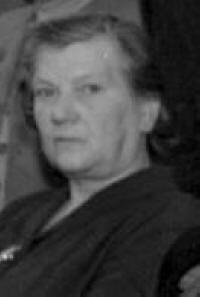
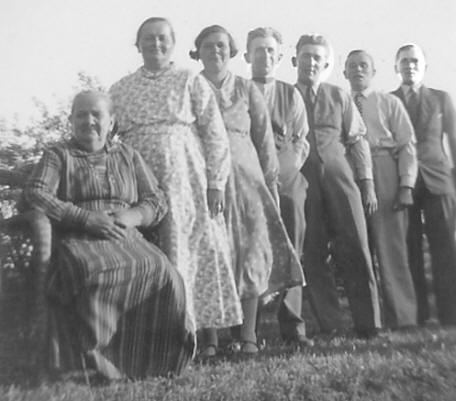
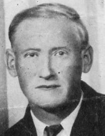

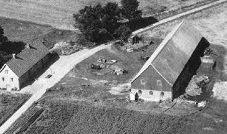


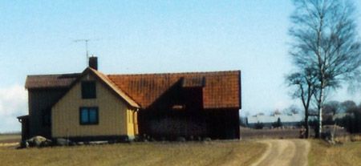
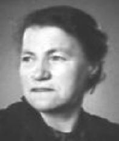

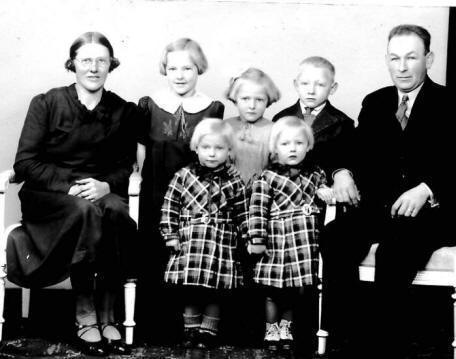
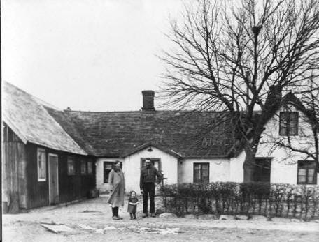

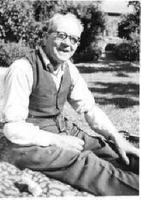
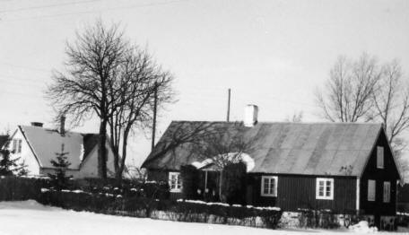
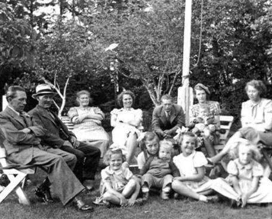
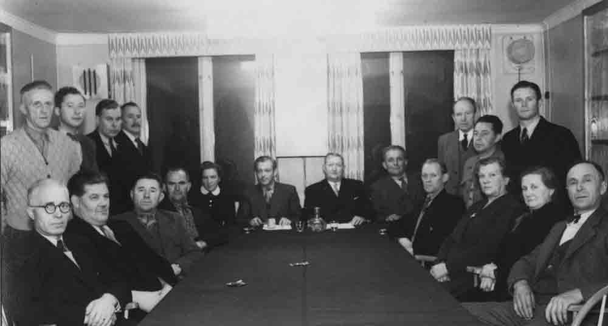
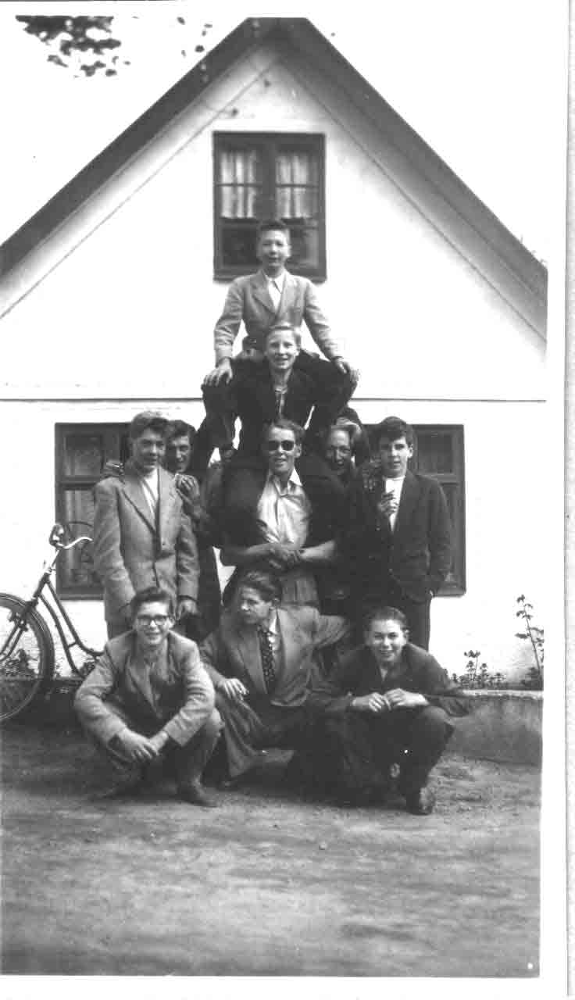
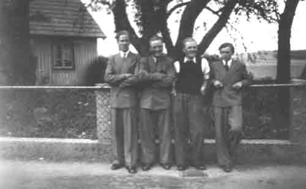
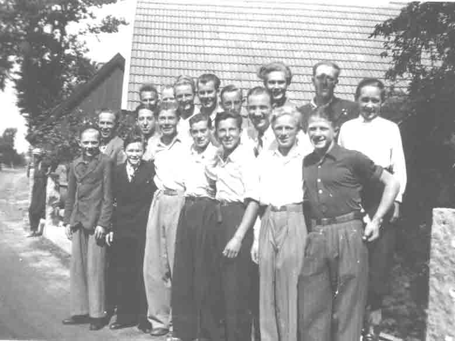
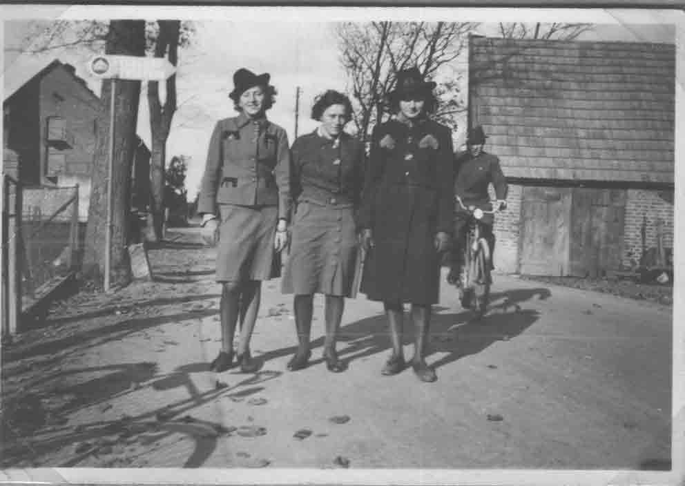
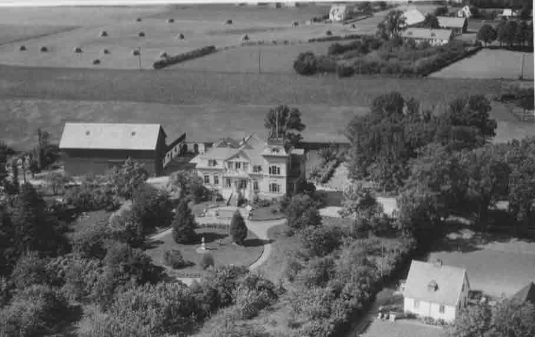
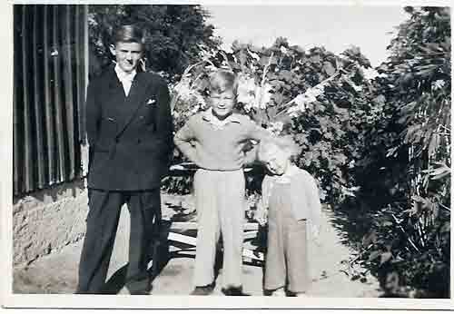
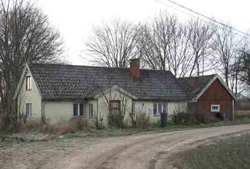
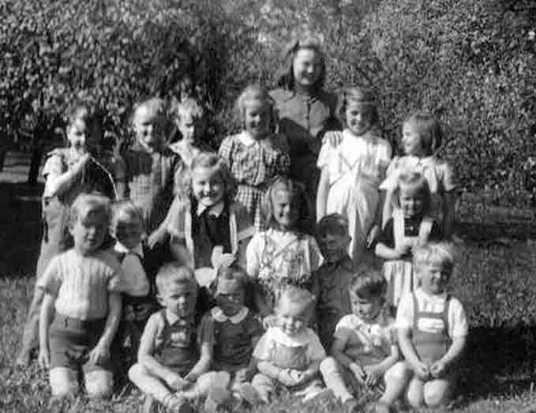
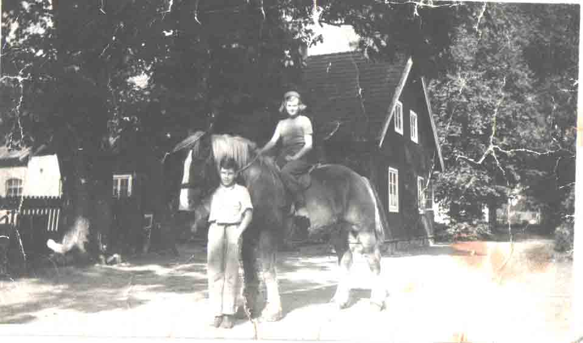
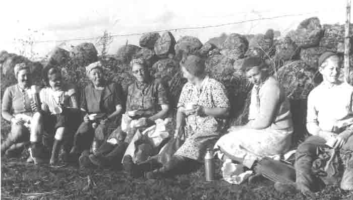
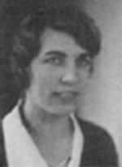
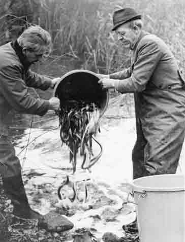
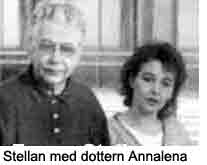
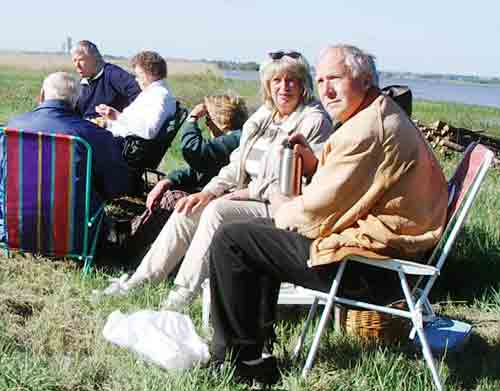
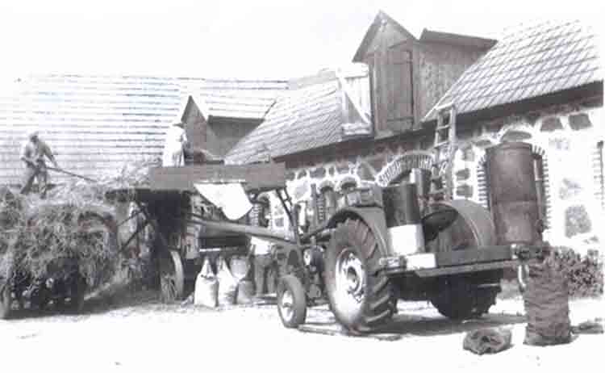
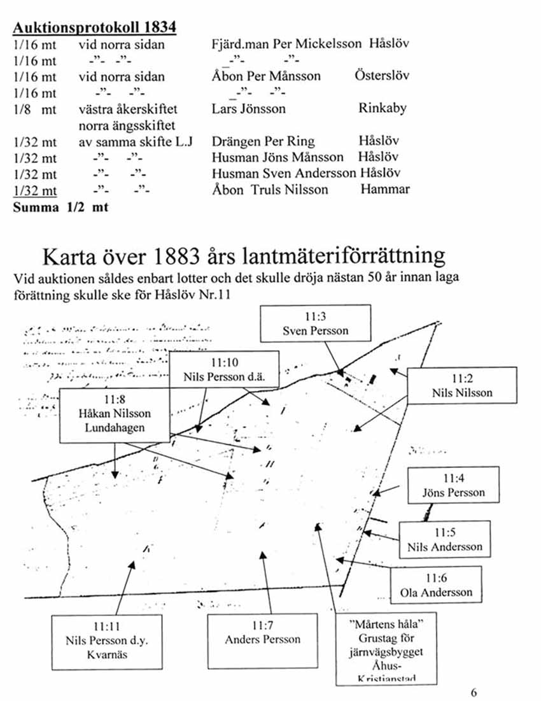
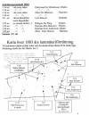
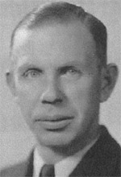

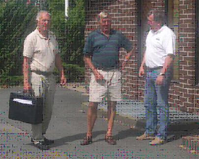
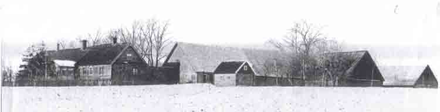
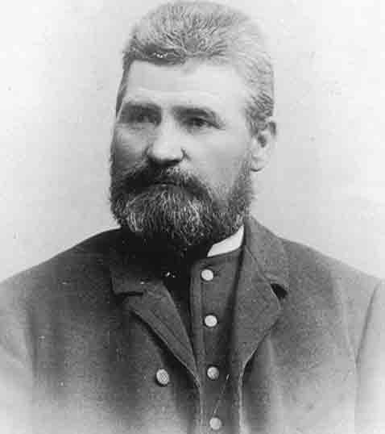
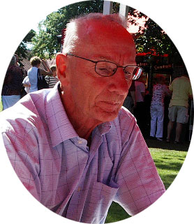


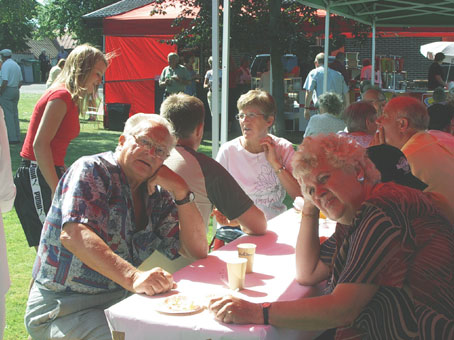

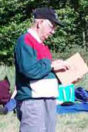
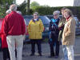